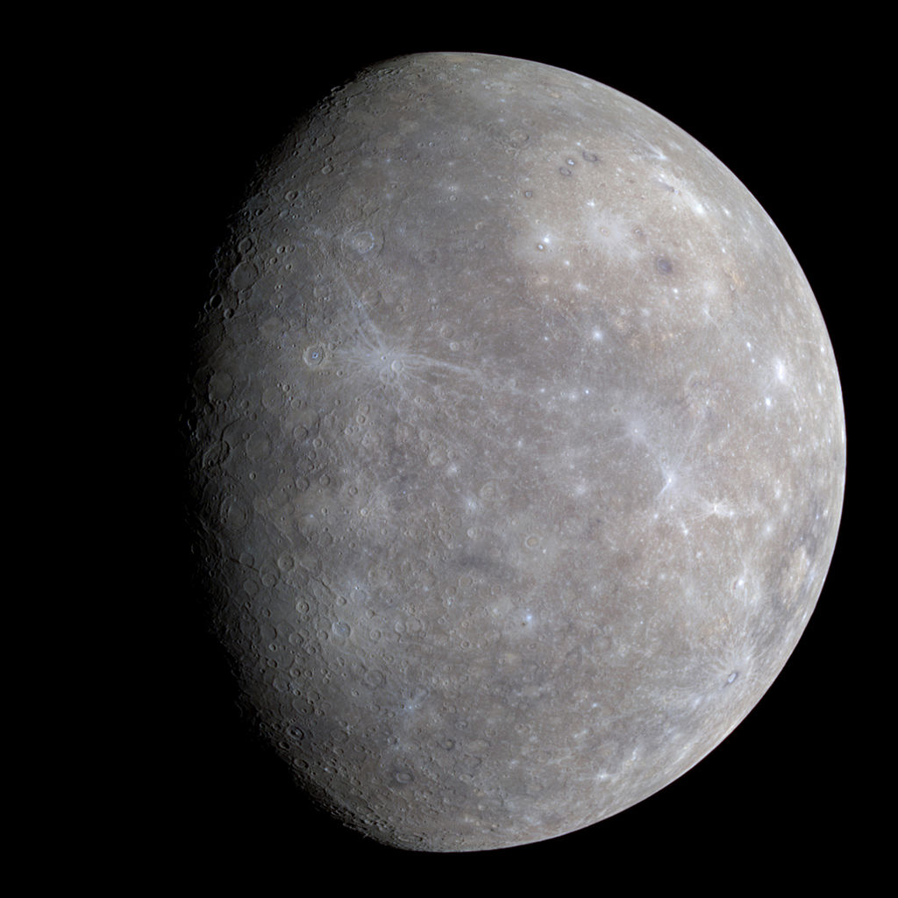

Mercury |
||||
|
Mercury is the smallest planet in the Solar System and the closest to the Sun. Its orbit around the Sun takes 87.97 Earth days, the shortest of all the Sun's planets. It is named after the Roman god Mercurius (Mercury), god of commerce, messenger of the gods, and mediator between gods and mortals, corresponding to the Greek god Hermes (Ἑρμῆς). Like Venus, Mercury orbits the Sun within Earth's orbit as an inferior planet, and its apparent distance from the Sun as viewed from Earth never exceeds 28°.
|
 | |||
|
Mercury appears to have a solid silicate crust and mantle overlying a solid, iron sulfide outer core layer, a deeper liquid core layer, and a solid inner core.[30][31]The planet's density is the second highest in the Solar System at 5.427 g/cm3, only slightly less than Earth's density of 5.515 g/cm3.[3] If the effect of gravitational compression were to be factored out from both planets, the materials of which Mercury is made would be denser than those of Earth, with an uncompressed density of 5.3 g/cm3 versus Earth's 4.4 g/cm3.[32] Mercury's density can be used to infer details of its inner structure. Although Earth's high density results appreciably from gravitational compression, particularly at the core, Mercury is much smaller and its inner regions are not as compressed. Therefore, for it to have such a high density, its core must be large and rich in iron. |
|
|
News | Contact us | Gallery |
Planets > Mercury